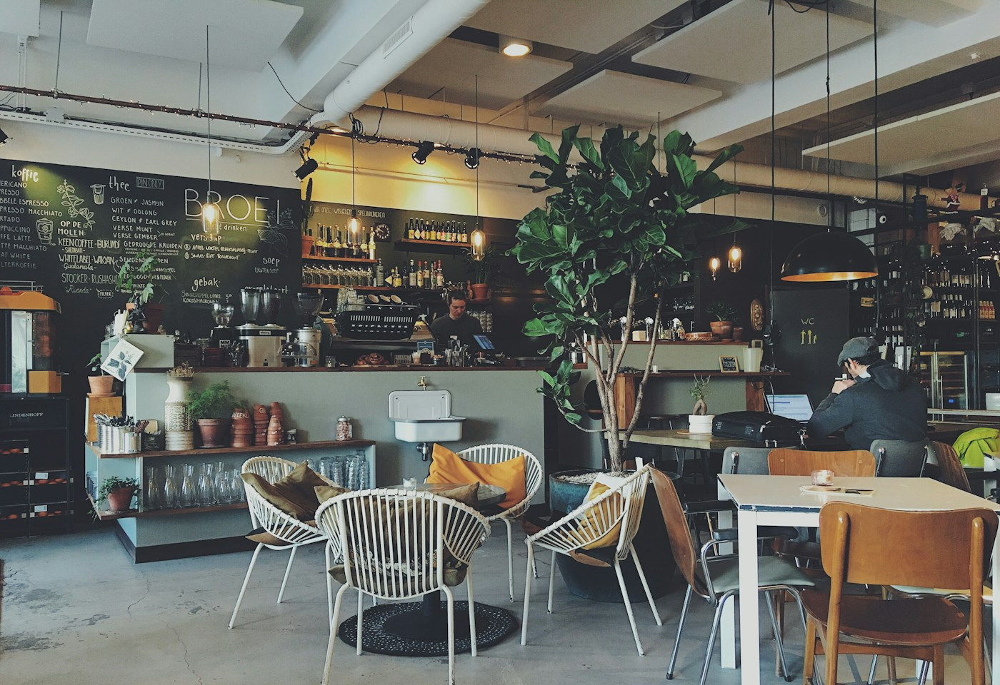
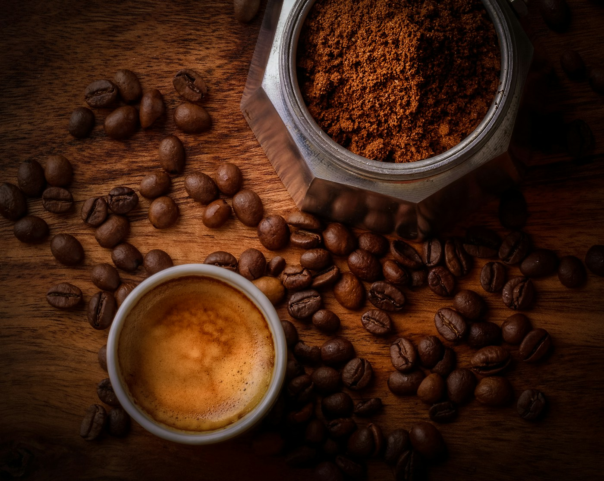
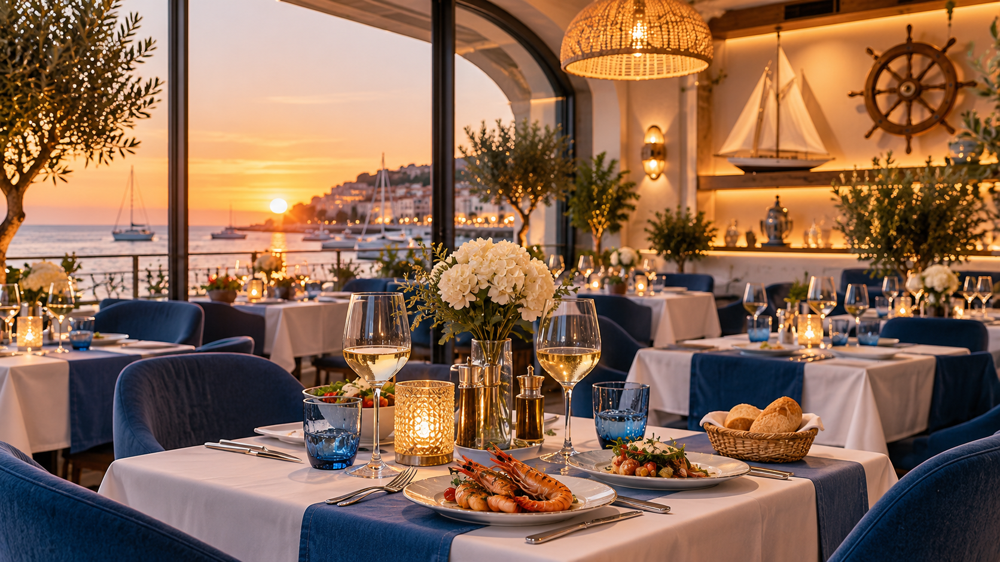

موقع ويبتجربة قهوة مختصة · متعدد الصفحات
محمصة سكون للقهوة
موقع ويب متكامل لمحمصة سكون يعرض أجود أنواع القهوة المختصة وتجارب التحضير. صُمم بواجهة هادئة وتنسيق متناسق يمنح الزائر تجربة تصفح مريحة.
زيارة المشروعأعمالي
ست تجارب رقمية تجمع بين وضوح الفكرة، جمال التنسيق، والأساس التقني المتين — من مواقع القهوة المختصة إلى الشبكات الآمنة وأنظمة الويب.

موقع ويبتجربة قهوة مختصة · متعدد الصفحات
موقع ويب متكامل لمحمصة سكون يعرض أجود أنواع القهوة المختصة وتجارب التحضير. صُمم بواجهة هادئة وتنسيق متناسق يمنح الزائر تجربة تصفح مريحة.
زيارة المشروع
هوية بصريةضيافة عربية · تصميم فاخر
تجربة رقمية راقية تحتفي بأصالة القهوة العربية وتقاليد الضيافة من خلال مطعم كوفي أثر، بتصميم بصري فاخر وتجربة رقمية متكاملة.
زيارة المشروع منصة مطعم
منصة مطعم
تجربة مطعم · قائمة الطعام
منصة رقمية متكاملة لمطعم بورتوفنو الإيطلي البحري، تجمع بين قوائم الطعام البحرية وإتقان تجربة الضيافة الإيطالية. تم تطويرها ونشرها بعناية فائقة لدمج الجمالية البصرية مع سهولة التنقل وحجز الطاولات.
زيارة المشروعمحاكاة عملية · أمن سيبراني
مشروع يحاكي بناء شبكة مؤسسية آمنة وتقسيمها إلى مناطق محمية باستخدام VLANs وقواعد الجدار الناري. يوثّق رحلة الإعداد والاختبار خطوة بخطوة، مع التركيز على مبادئ الأمن السيبراني وتقليل سطح الهجوم.
اطلبي تفاصيل المشروعتنظيم العمل · واجهة استخدام
لوحة ويب لتنظيم المهام وتتبع تقدم المشاريع البرمجية بواجهة بسيطة وسريعة الاستجابة. تعتمد على تصنيفات ذكية وحالات واضحة تساعد الفريق على التركيز وإنجاز العمل بهدوء.
اطلبي تفاصيل المشروع
واجهة مطعمتجربة طعام · تصميم متجاوب
واجهة تصوّر تجربة رقمية أنيقة لمطعم مأكولات بحرية، من قائمة الطعام حتى حجز الطاولة. توازن بين الصور الشهية والمساحات البيضاء والتنقل السلس على جميع الشاشات.
اطلبي تفاصيل المشروعمشروعك القادم
سواء كان موقعًا جديدًا، أو إعادة تصميم، أو واجهة تحتاج لمسة هادئة — لنجدها معًا.